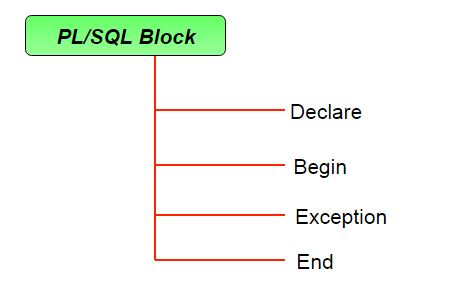

PL/SQL Block Structure
PL/SQL extends SQL by adding constructs found in procedural languages, resulting in a structural language that is more powerful than SQL. The basic unit in PL/SQL is a block. All PL/SQL programs are made up of blocks, which can be nested within each other

DECLARE
declaration statements;
BEGIN
executable statements
EXCEPTIONS
exception handling statements
END;
- Declare section starts with DECLARE keyword in which variables, constants, records as cursors can be declared which stores data temporarily. It basically consists definition of PL/SQL identifiers. This part of the code is optional.
- Execution section starts with BEGIN and ends with END keyword.This is a mandatory section and here the program logic is written to perform any task like loops and conditional statements. It supports all DML commands, DDL commands and SQL*PLUS built-in functions as well.
- Exception section starts with EXCEPTION keyword.This section is optional which contains statements that are executed when a run-time error occurs. Any exceptions can be handled in this section.